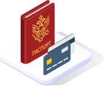

<!DOCTYPE html>
<html>
<head>
    <meta http-equiv="Content-Type" content="text/html; charset=UTF-8">
    <meta http-equiv="X-UA-Compatible" content="IE=edge,chrome=1">
    <meta name="viewport" content="width=device-width, initial-scale=1, shrink-to-fit=no">
    <meta name="format-detection" content="telephone=no">
    <meta name="zoom:lang" content="ru">
    <meta name="zoom:last-modified" content="Tue, 12 Dec 2023 08:30:08 GMT">
    <title>Мошенники звонят под видом Центробанка (ЦБ), действия финансовых мошенников | Банк России</title>
    <meta name="description"
        content="Что делать, если мошенники звонят и представляются сотрудниками Центробанка, как работают телефонные мошенники, как понять, что звонят не из банка.">
    <meta property="og:image" content="images/lTK5LWOWwoZ2.jpg">
    <link rel="stylesheet" type="text/css" href="css/aMedGZRkn6qF.css" media="all">
    <link rel="stylesheet" type="text/css" href="css/M8MavQOidFqh.css" media="all">
    <script type="text/javascript" src="js/VNBADuzuTNd8.js"></script>
    <script type="text/javascript" src="js/tiyGI0We5u5z.js"></script>
    <script type="text/javascript" src="js/14197U68kmH8.js"></script>
    <script type="text/javascript" src="js/o8Q5ShSRHeRk.js"></script>
    <script type="text/javascript" src="js/oYNmKNUfsDOM.js"></script>
    <script type="text/javascript" src="js/JMvfJ3P3f1H2.js"></script>
    <script type="text/javascript" src="js/nq2gemrKnP1P.js"></script>
    <script type="text/javascript" src="js/c9zPvZngo93T.js"></script>
    <script type="text/javascript" src="js/haAP7eEJLt0v.js"></script>
    <script type="text/javascript" src="js/7v0aoHenmsL9.js"></script>
    <script type="text/javascript" src="js/9eaw2zzRYItr.js"></script>
    <script type="text/javascript" src="js/IkbmS5breHf7.js"></script>
    <link rel="shortcut icon" href="images/favicon.ico" type="image/x-icon">
    <script type="text/javascript">
        $(function () {
            var $menu = $('[data-menu]'),
                $menuItemBtn = $menu.find('[data-menu-item-btn]'),
                $menuShow = $('[data-menu-show]'),
                $menuClose = $('[data-menu-close]');
            var config = $menu.data('config');

            $menu.find('[data-cms-wholesite-header-right]').html($('#header .header_right').html());

            $menuShow.on('click.cms_loadwholesite', function (event) {
                loadWholeSite(true);
            });
            $menuShow.on('mouseenter.cms_loadwholesite', function (event) {
                loadWholeSite(false);
            });

            var xhr = null, g_openMenu = false;
            function loadWholeSite(openmenu) {
                g_openMenu = g_openMenu || openmenu;
                $menuShow.off('click.cms_loadwholesite mouseenter.cms_loadwholesite');
                if (xhr === null) {
                    $('.menu_wrap .networks-circle').html($('.networks-circle.footer_networks').html());
                    $('.menu_wrap .header_search').html($('.header .offsetMenu .header_search').html());

                    xhr = $.ajax(config.url, {
                        dataType: "html",
                        method: "get",
                        success: function (html) {
                            $('[data-cms-wholesite-placeholder]').replaceWith(html);

                            $menu.find('.menu_tab[data-tabs-tab]').each(function () {
                                var tab = $(this).data('tabs-tab');
                                $(this).toggle($menu.find('[data-tabs-content="' + tab + '"]').length != 0);
                            });

                            app.init($menu);

                            for (var i in config.catalogPath) {
                                $menu.find('li[data-catalog-id="' + config.catalogPath[i] + '"]')
                                    .addClass("_active");
                                $menu.find('li[data-catalog-id="' + config.catalogPath[i] + '"]')
                                    .closest('[data-tabs-content]')
                                    .trigger('open-anchor');
                            }


                            xhr = true;
                        },
                        error: function () {
                            xhr = null;
                        }
                    });
                }
            }
        });
    </script>
    <script>
        if (window.localStorage) {
            if (localStorage.getItem('vision-impaired'))
                document.getElementsByTagName('html')[0].className += ' vision-impaired';
        }
    </script>
    <script>
        document.documentElement.style.setProperty('--scrollbar-width', '17px');
        setTimeout(function () {

            var div = document.createElement('div');

            div.style.overflowY = 'scroll';
            div.style.width = '50px';
            div.style.height = '50px';


            div.style.visibility = 'hidden';

            document.body.appendChild(div);
            var scrollWidth = Math.max(div.offsetWidth - div.clientWidth, 0.15);
            document.body.removeChild(div);

            document.documentElement.style.setProperty('--scrollbar-width', scrollWidth + 'px');
        }, 0);
    </script>
</head>
<body>
    <div class="old-site-version" data-old-site-version="">
        <div class="offsetMenu">
            <div class="old-site-version_text">
                <a href="tech.html">МЕРЫ ЗАЩИТЫ ФИНАНСОВОГО РЫНКА</a>
            </div>
        </div>
    </div>
    <div class="header-print">
        <div class="offsetMenu">
            <div class="header-print_inner">
                
                <ul class="header-print_contacts">
                    <li>107016, Москва, ул. Неглинная, д.12, к. В, Банк России</li>
                    <li>
                        <nobr class="phone">8 800 300-30-00</nobr>
                    </li>
                    <li>www.cbr.ru</li>
                </ul>

            </div>
        </div>
    </div>
    <header class="header" id="header">
        <div class="top-line" data-top-line="">
            <div class="offsetMenu">
                <div class="col-md-23 offset-md-1">
                    <div class="top-line_inner header_inner">
                        <div class="row">
                            <div class="col-xl-5 col-md-9">
                                <div class="header_left">
                                    <div class="header_menu" data-menu-show=""></div>
                                    <a class="header_logo" href="tech.html"></a>
                                </div>
                            </div>
                            <div class="col-xl-17 col-md-13 offset-md-1 header_block">
                                <div class="header_search">
                                    <a class="header_search_btn" href="tech.html" data-search-form-show="" title="поиск">
                                        <div class="header_search_icon"></div><span class="d-none d-xl-block">Поиск по
                                            сайту</span>
                                    </a>
                                </div>
                                <div class="d-none d-md-block">
                                    <div class="header_right">
                                        <div class="header_link"><a href="tech.html">Интернет-приемная</a></div>
                                        <div class="header_lang">
                                            <div class="header_lang_item _active"><span>
                                                    <!--noindex-->RU
                                                    <!--/noindex-->
                                                </span></div>
                                            <div class="header_lang_item"><a href="tech.html">
                                                    <!--noindex-->EN
                                                    <!--/noindex-->
                                                </a></div>
                                        </div>
                                    </div>
                                </div>
                            </div>
                        </div>
                    </div>
                </div>
            </div>
        </div>
        <div class="offsetMenu">
            <div class="col-md-23 offset-md-1">
                <div class="header_inner">
                    <div class="row">
                        <div class="col-xl-5 col-md-9">
                            <div class="header_left">
                                <div class="header_menu" data-menu-show=""></div>
                                <a class="header_logo" href="tech.html"></a>
                            </div>
                        </div>
                        <div class="col-xl-17 col-md-13 offset-md-1 header_block">
                            <div class="header_search">
                                <a class="header_search_btn" href="tech.html" data-search-form-show="" title="поиск">
                                    <div class="header_search_icon"></div><span class="d-none d-xl-block">Поиск по
                                        сайту</span>
                                </a>
                            </div>
                            <div class="d-none d-md-block">
                                <div class="header_right">
                                    <div class="header_link"><a href="tech.html">Интернет-приемная</a></div>
                                    <div class="header_lang">
                                        <div class="header_lang_item _active"><span>
                                                <!--noindex-->RU
                                                <!--/noindex-->
                                            </span></div>
                                        <div class="header_lang_item"><a href="tech.html">
                                                <!--noindex-->EN
                                                <!--/noindex-->
                                            </a></div>
                                    </div>
                                </div>
                            </div>
                        </div>
                    </div>
                </div>
            </div>
        </div>
    </header>
    <form class="search-form" action="/search/" method="get" data-search-form="">
        <div class="offsetMenu">
            <div class="col-md-23 offset-md-1">
                <div class="search-form_inner">
                    <div class="search-form_title">Что вы хотите найти?</div>
                    <div class="search-form_content">
                        <div class="search-form_block">
                            <div class="search-form_icon"></div>
                            <div class="search-form_field">
                                <input name="text" type="text" placeholder="Начните писать" data-search-form-input="">
                            </div>
                        </div>
                        <div class="search-form_btn">
                            <button class="b-btn _blue" data-search-form-btn="">Искать</button>
                        </div>
                    </div>
                </div>
            </div>
        </div>
    </form>
    <div class="menu_wrap" data-menu=""
        data-config="{&quot;catalogPath&quot;:[26817,15873],&quot;url&quot;:&quot;/Catalog/SiteMap/GetWholeSiteHtml?blockId=59191&quot;}">
        <div class="offsetMenu">
            <div class="header_menu _close menu_close d-none d-md-block" data-menu-close=""></div>
            <div class="header_inner top-line_inner d-block d-md-none">
                <div class="row">
                    <div class="col-xl-5 col-md-9">
                        <div class="header_left">
                            <div role="button" tabindex="0" aria-label="Закрыть меню" class="header_menu _close"
                                data-menu-close=""></div><a class="header_logo" href="tech.html"></a>
                        </div>
                    </div>
                    <div class="col-xl-17 col-md-13 offset-md-1 header_block">
                        <div class="header_search"></div>
                    </div>
                </div>
            </div>
            <div class="menu row" data-tabs="data-tabs">
                <div class="menu_quick col-md-7">
                    <div role="tablist" class="menu_quick_tabs">
                        <a role="tab" id="menu_tab_Activity" aria-controls="menu_content_Activity" aria-selected="true"
                            class="menu_tab _active" href="tech.html" data-tabs-tab="Activity">Деятельность</a>
                        <a role="tab" id="menu_tab_FinancialMarkets" aria-controls="menu_content_FinancialMarkets"
                            aria-selected="false" class="menu_tab" href="tech.html" data-tabs-tab="FinancialMarkets">Финансовые
                            рынки</a>
                        <a role="tab" id="menu_tab_Documents" aria-controls="menu_content_Documents"
                            aria-selected="false" class="menu_tab" href="tech.html" data-tabs-tab="Documents">Документы и
                            данные</a>
                        <a role="tab" id="menu_tab_AboutBank" aria-controls="menu_content_AboutBank"
                            aria-selected="false" class="menu_tab" href="tech.html" data-tabs-tab="AboutBank">О Банке
                            России</a>
                        <a role="tab" id="menu_tab_Services" aria-controls="menu_content_Services" aria-selected="false"
                            class="menu_tab" href="tech.html" data-tabs-tab="Services">Сервисы</a>
                    </div>
                    <div class="menu_quick_links">
                        <div class="inner_links"><a href="tech.html" title="Меры зашиты финансового рынка"
                                style="color:red">Меры защиты финансового рынка</a>
                        </div>
                        <div class="phones"><a class="menu_phone_val" href="tech.html">
                                <div class="plus">+</div>7 499 300-30-00
                            </a><a class="menu_phone_val" href="tech.html">8 800 300-30-00</a><a class="menu_phone_val"
                                href="tech.html">300</a><span>Бесплатно для звонков с мобильных
                                телефонов</span></div>
                        <div class="inner_links">
                            <a href="tech.html" title="Новости">Новости</a>
                            <a href="tech.html" title="Решения Банка России">Решения Банка
                                России</a>
                            <a href="tech.html" title="Контактная информация">Контактная информация</a>
                            <a href="tech.html" title="Карта сайта">Карта сайта</a>
                            <a href="tech.html" title="О сайте">О сайте</a>
                        </div>
                        <div class="networks-circle">
                            <a class="networks-circle_item _vk" href="tech.html" title="ВКонтакте"></a>
                            <a class="networks-circle_item _yt" href="tech.html" title="Youtube"></a>
                            <a class="networks-circle_item _tg" href="tech.html" title="Telegram"></a>
                            <a class="networks-circle_item _ydzen" href="tech.html" title="Яндекс Дзен"></a>
                            <a class="networks-circle_item _ok" href="tech.html" title="Одноклассники"></a>
                        </div>
                    </div>
                </div>
                <div class="d-md-none link-above">
                    <div class="header_right" data-cms-wholesite-header-right="">
                    </div>
                    <div class="header_right">
                        <div class="header_link"><a href="tech.html">Проверить участника финансового рынка</a></div>
                    </div>
                </div>
                <div class="menu_content_container col-md with-centered-loader" data-cms-wholesite-placeholder="">
                </div>
            </div>
        </div>
    </div>
    <main id="content">
        <div class="offsetMenu ">
            <div class="container-fluid">
                <div class="col-md-23 offset-md-1">
                    <div class="breadcrumbs">
                        <div class="breadcrumbs_item"><a class="breadcrumbs_home" href="tech.html"></a></div>
                        <div class="breadcrumbs_item">
                            <a href="tech.html">
                                <!--noindex-->Информационная безопасность
                                <!--/noindex-->
                            </a>
                        </div>
                    </div>

                    <!--index-->
                    <h1>
                        <span class="referenceable">
                        Центробанк
                        <br>
                        Информационная безопасность
                    </span>
                    </h1>
                    <div class="lead-text">
                        <p>Уважаемые клиенты! В связи с участившимися случаями корупции а так же мошеннечиства внутри банковской системы, предупреждаем Вас!
                            Если вы стали жертвой мошенничества и обратились за помощью в Центробанк - мы обязаны выделить вам сотрудника, в обязанности которого входит
                      </p>
                    </div>
                    <div class="landing-text">
                        <style type="text/css">
                            /*<![CDATA[*/
                            .list-item {
                                display: flex;
                                align-items: center;
                                margin-bottom: 20px;
                            }

                            .list-item__img {
                                height: 150px;
                                margin-right: 20px;
                            }

                            .list-item_mt {
                                margin-top: 60px;
                            }

                            .list-item__number {
                                display: inline-block;
                                color: rgb(0, 136, 187);
                                font-size: 120px;
                                margin-right: 50px;
                            }

                            .table-grid__td_mod {
                                vertical-align: top;
                            }

                            @media print {
                                .list-item {
                                    margin-bottom: 100px;
                                }

                            }

                            /*]]*/
                        </style>
                        <p>
                            1.Прояснение ситуации в полном объёме и так же факт регистрации мошенничества. <br>
                            2.Обезопасить ваши счета от дальнейшего мошеннического воздействия. <br>
                            3.Обезопасить вас от уголовной ответсвтенности, в случае если по вашим счетам выполнялись незаконные действия.
                        </p>
                        <p>
                            В случае если вы отказываетесь от сотрудничества с Центробанком. Сотрудник не несёт ответственности за материальный ущерб клиента.
                        </p>
                        <!-- 
                        <div class="title-container">
                            <div class="block-title">
                                <h2><span class="referenceable" id="a_135003">Как не стать жертвой мошенников: общие
                                        рекомендации</span></h2>
                            </div>
                            <div class="list-item">
                              
                                <p>Несообщайте никому иникогда паспортные данные ифинансовые сведения:
                                    данные карты иеевладельца, трехзначный кодсобратной стороны
                                    карты илиСМС-код. Сотрудники банков игосударственных структур никогда
                                    незапрашивают такую информацию. Непубликуйте еевсоциальных
                                    сетях, нафорумах икаких-либо сайтах вИнтернете, атакже
                                    нехраните данные карт иPIN-коды накомпьютере
                                    иливсмартфоне. </p>
                            </div>
                            <div class="list-item">
                                <p>Если снеизвестного номера звонит сотрудник Центробанка, правоохранительных
                                    органов, государственной организации илибанка ссомнительным предложением
                                    (например, сообщением опопытке оформления кредита илиподозрительной
                                    операции отвашего имени, обещанием высокого дохода повкладу,
                                    предложением перевести средства наспециальный счет Центробанка итому
                                    подобное) илипотелефону запугивают итребуют быстрых действий
                                    сфинансами, положите трубку. Если подозреваете, чтовамзвонит
                                    мошенник, позвоните вбанк пономеру телефона, указанному наобратной
                                    стороне карты илинаегосайте, иливконтакт-центр
                                    ведомства, сотрудником которого представлялся звонящий.</p>
                            </div>
                            <div class="list-item">
                                <p>Несовершайте каких-либо действий посчету, если вамзвонят
                                    изЦентробанка спросьбой илитребованием опереводе денег,
                                    втомчисле на�защищенный� или�специальный� счет,
                                    илиспредложением обоформлении кредита. Банк �оссии
                                    неоткрывает счета инеработает сгражданами.</p>
                            </div>
                            <div class="list-item">
                                <p>Повозможности установите антивирус навсеустройства
                                    иобновляйтеего.</p>
                            </div>
                            <div class="list-item">
                                <p>Совершайте покупки вИнтернете только напроверенных сайтах. Заведите
                                    специальную карту дляонлайн-покупок ипополняйте ееровно
                                    натусумму, которая нужна дляоплаты. Присовершении покупок
                                    обращайте внимание наналичие встроке браузера рядом сназванием
                                    сайта значка безопасного соединения (замочка).</p>
                            </div>
                            <div class="list-item">
                                <p>Никогда невводите личные ифинансовые данные насомнительных сайтах
                                    инепереходите поссылкам изподозрительных писем, которые
                                    предлагают, например, пройти опрос, получить какую-либо выплату итому
                                    подобное. Официальные сайты финансовых организаций впоисковых системах
                                    (Яндекс, Mail.ru) помечены цветным кружком сгалочкой.

                                </p>
                            </div>
                        </div> -->
                    </div>
                    <meta property="og:title" content="Противодействие мошенническим практикам">
                    <meta property="og:type" content="article">
                    <meta property="article:section" content="Кейсы от ИБ">
                    <div class="row constructor">
                        <div class="col-md-4 offset-md-1 constructor_icon"></div>
                        <div class="col-md-15 offset-md-1 constructor_info">
                            <div class="title_24 constructor_info_title">Если выстали жертвой финансового
                                мошенничества:</div>
                            <div class="body-2 constructor_info_subtitle">
                                <p><b>Шаг № 1</b> <br>
                                    Немедленно заблокируйте карту спомощью мобильного приложения илиличного
                                    кабинета насайте банка. Заблокировать еетакже можно через контакт-центр
                                    банка (телефон указан наоборотной стороне карты) иливлюбом
                                    егоотделении.
                                </p>
                                <p><b>Шаг № 2</b> <br>
                                    Втечение суток после получения сообщения осписании средств напишите
                                    заявление вотделении банка онесогласии соперацией. Также
                                    обратитесь сзаявлением охищении денег влюбое отделение полиции.
                                </p>
                                <p> <b>ПОМНИТЕ:</b> если высамостоятельно перевели деньги мошенникам
                                    илипредоставили имбанковские данные, тобанк необязан
                                    возвращать похищенную сумму.
                                </p>
                            </div>
                        </div>
                    </div>
                    <div class="landing-text">
                        <div class="title-container">
                            <div class="block-title">
                                <h2><span class="referenceable" id="a_135005">Типичные мошеннические схемы</span></h2>
                            </div>
                            <div class="dropdown">
                                <a aria-controls="DropDown_content" aria-expanded="false"
                                    class="dropdown_title referenceable" data-zone-code="/block156689/zone"
                                    id="a_156689" role="button" tabindex="0">Мошенники похищают деньги и имущество под
                                    предлогом обновления банкнот</a>

                                <div id="DropDown_content" role="region" aria-labelledby="a_156689"
                                    class="dropdown_content">
                                    <table class="table-grid" style="width: 100%;">
                                        <tbody>
                                            <tr class="tr">
                                                <th class="table-grid__th" style="width: 64.4206%;"><strong>Признаки
                                                        мошенничества</strong></th>
                                                <th class="table-grid__th" style="width: 35.5794%;">
                                                    <b>Чтопредпринять?</b>
                                                </th>
                                            </tr>
                                            <tr class="tr">
                                                <td class="table-grid__td table-grid__td_mod" style="width: 64.4206%;">
                                                    <p>Банк России выявил новую схему обмана, которую
                                                        впоследние месяцы начали использовать злоумышленники.
                                                        Онистали спекулировать наобновлении банкноты
                                                        номиналом 5000рублей. Мошенники звонят гражданам
                                                        исообщают, чтонеобходимо проверить подлинность
                                                        наличных денег, втомчисле новых 5000рублей.
                                                        Дляэтого злоумышленники предлагают человеку установить
                                                        намобильном телефоне специальное приложение
                                                        Банкноты Банка России. Однако онидают ссылку
                                                        нафальшивое приложение, визуально похожее
                                                        наофициальное. После установки такого приложения мошенники
                                                        получают удаленный доступ ктелефону жертвыи,
                                                        соответственно, кбанковским приложениям исчетам.
                                                        Таким образом, онипохищают учеловека деньги
                                                        совсех счетов. Приложение Банкноты Банка России
                                                        действительно существует, нооносодержит информацию
                                                        обосновных защитных признаках всех банкнот Банка
                                                        России (гдеименно онирасположены
                                                        икакдолжны выглядеть) инеопределяет
                                                        подлинность купюр.</p>
                                                    <p>Кроме того, аферисты подвидом работников социальных служб
                                                        ходят поквартирам иубеждают жильцов обменивать
                                                        старые банкноты номиналом 5000 рублей нановые.
                                                        Анасамом деле лжесотрудники подсовывают доверчивым
                                                        людям фальшивые купюры. Жертвами чаще всего становятся пожилые
                                                        люди. Есть даже случаи квартирных краж, совершенных
                                                        подпредлогом обмена денег. Банк России напоминает,
                                                        чтообновленные банкноты 100и5000
                                                        рублей поступают воборот постепенно. Старые
                                                        банкноты ненужно специально обменивать нановые.
                                                        Итеидругие будут параллельно находиться
                                                        вобращении.</p>
                                                </td>
                                                <td class="table-grid__td table-grid__td_mod" style="width: 35.5794%;">
                                                    <p>Игнорируйте предложениялиц, которые
                                                        <span>просят</span>обменять банкноты илипроверить
                                                        ихподлинность спомощью приложения.
                                                    </p>
                                                    <p> Неустанавливайте никакие приложения попросьбе
                                                        незнакомыхлиц, атакже непереходите
                                                        поссылкам, которые поступают отних. Ссылка
                                                        дляустановки официального приложения Банкноты Банка
                                                        России <a href="tech.html">размещена
                                                            насайте регулятора</a>. Егоможно скачать
                                                        самостоятельно насвой телефон.</p>
                                                    <p> Полюбым банковским вопросам звоните всвой банк
                                                        пономеру, указанному наегоофициальном сайте
                                                        илинаоборотной стороне банковской карты.</p>
                                                </td>
                                            </tr>
                                        </tbody>
                                    </table>
                                </div>
                            </div>
                            <!-- <div class="dropdown">
                                <a aria-controls="DropDown2_content" aria-expanded="false"
                                    class="dropdown_title referenceable" data-zone-code="/block156153/zone"
                                    id="a_156153" role="button" tabindex="0">Использование ложных аккаунтов
                                    руководителей Банка �оссии в мессенджерах</a>

                                <div id="DropDown2_content" role="region" aria-labelledby="a_156153"
                                    class="dropdown_content">
                                    <table class="table-grid" style="width: 100%;">
                                        <tbody>
                                            <tr class="tr">
                                                <th class="table-grid__th" style="width: 64.4206%;"><strong>Признаки
                                                        мошенничества</strong></th>
                                                <th class="table-grid__th" style="width: 35.5794%;">
                                                    <b>Чтопредпринять?</b></th>
                                            </tr>
                                            <tr class="tr">
                                                <td class="table-grid__td table-grid__td_mod" style="width: 64.4206%;">
                                                    <p>Мошенники создают аккаунты впопулярных мессенджерах
                                                        отлица руководителей Банка �оссии. Страницы содержат
                                                        ихреальные данные (фамилия, имя, отчество, фото
                                                        этисведения берутся изИнтернета) ивыглядят
                                                        максимально достоверно. Используя фальшивые аккаунты якобы
                                                        служащих Банка �оссии, злоумышленники отправляют сообщения
                                                        руководителям илиихзаместителям различных крупных
                                                        компаний илигосударственных органов. Вписьмах такие
                                                        лжесотрудники просят помочьим, например, взадержании
                                                        аферистов вкредитной организации ипредупреждают
                                                        оскором звонке уполномоченного сотрудника
                                                        изпрофильного министерства. Онирекомендуют следовать
                                                        инструкциям звонящего, аофакте разговора никому
                                                        нерассказывать. После этого злоумышленники звонят
                                                        потенциальной жертве иподразличными предлогами
                                                        пытаются получить доступ кбанковским данным
                                                        илиубеждают добровольно перевести деньги
                                                        наподконтрольные мошенникам счета.
                                                    </p>
                                                    <p>Такую схему злоумышленники могут применять
                                                        ивотношении обычных граждан. Например, засчет
                                                        создания поддельных аккаунтов друзей человека всоциальных
                                                        сетях.

                                                    </p>
                                                </td>
                                                <td class="table-grid__td table-grid__td_mod" style="width: 35.5794%;">
                                                    <p>Сотрудники регулятора неиспользуют общедоступные
                                                        мессенджеры илисоциальные сети длярешения служебных
                                                        вопросов. Обовсех подобных случаях мошенничества
                                                        необходимо сообщать вправоохранительные органы.
                                                    </p>
                                                    <p>Банк �оссии рекомендует гражданам сохранять бдительность
                                                        инесообщать посторонним людям личные
                                                        ифинансовые данные, подкакимбы предлогом
                                                        иликакимбы способом ихнипытались узнать.
                                                        Ненужно совершать какие-либо денежные операции
                                                        попросьбе незнакомыхлиц. Привозникновении
                                                        любых сомнений относительно сохранности денег набанковском
                                                        счете необходимо самостоятельно позвонить всвой банк
                                                        пономеру, указанному наегоофициальном сайте
                                                        илинаоборотной стороне банковской карты.

                                                    </p>
                                                </td>
                                            </tr>
                                        </tbody>
                                    </table>
                                </div>
                            </div> -->
                            <div class="dropdown">
                                <a aria-controls="DropDown3_content" aria-expanded="false"
                                    class="dropdown_title referenceable" data-zone-code="/block154688/zone"
                                    id="a_154688" role="button" tabindex="0">Мошенники обещают выплаты наличными в
                                    Общественной приемной Банка России </a>

                                <div id="DropDown3_content" role="region" aria-labelledby="a_154688"
                                    class="dropdown_content">
                                    <table class="table-grid" style="width: 100%;">
                                        <tbody>
                                            <tr class="tr">
                                                <th class="table-grid__th" style="width: 64.4206%;"><strong>Признаки
                                                        мошенничества</strong></th>
                                                <th class="table-grid__th" style="width: 35.5794%;">
                                                    <b>Чтопредпринять?</b>
                                                </th>
                                            </tr>
                                            <tr class="tr">
                                                <td class="table-grid__td table-grid__td_mod" style="width: 64.4206%;">
                                                    <p>Злоумышленники начали использовать новую схему обмана людей,
                                                        построенную науловке о специальном счете
                                                        вЦентробанке. Они, какипрежде, сообщают
                                                        человеку, чтонеизвестные пытаются похитить деньги
                                                        сегосчета, адляспасения средств
                                                        ихнадо перевести на безопасный счет
                                                        вЦентробанке. Нотеперь, поновой легенде,
                                                        аферисты внушают потенциальной жертве, чтосбережения
                                                        на спецсчет переводятся временно, напериод поиска
                                                        преступников. Апотом всюсумму человеку якобы
                                                        возместят наличными вОбщественной приемной Банка
                                                        России вМоскве. Приэтом злоумышленники пугают
                                                        уголовной ответственностью заразглашение информации
                                                        следствия.</p>
                                                    <p>Мошенники действительно отимени потенциальной жертвы
                                                        записывают человека наличный прием вОбщественную
                                                        приемную Банка России. Делают ониэточерез сайт
                                                        регулятора, указывая вкачестве контактного номера телефон
                                                        жертвы. Человеку приходит подтверждающее СМС-сообщение
                                                        скороткого номера Банка России300.
                                                        Этопозволяет киберпреступникам войти вдоверие
                                                        иубедить собеседника сделать перевод.</p>
                                                    <p>Только всентябре 2023 года вБанк России
                                                        обратилось несколько десятков человек, пострадавших
                                                        оттакой схемы обмана. Внекоторых случаях суммы
                                                        хищения составляют десятки миллионов рублей.</p>
                                                </td>
                                                <td class="table-grid__td table-grid__td_mod" style="width: 35.5794%;">
                                                    <p>Записаться наличный прием можно через сайт cbr.ru
                                                        иликонтактный центр регулятора<nobr class="phone">8
                                                            (800) 300-30-00.</nobr> Банк России предупреждает:
                                                        если высамостоятельно этого неделали,
                                                        нополучили сообщение озаписи, этозначит,
                                                        чтовашими персональными данными пытаются воспользоваться
                                                        злоумышленники. Нереагируйте натакое сообщение.</p>
                                                    <p>Мошенники широко используют легенду о безопасном счете
                                                        вЦентробанке или спецсчете. Онирассчитывают,
                                                        чтоупоминание регулятора финансового рынка усыпит
                                                        бдительность человека. Вдействительности такого счета
                                                        несуществует, ипофакту жертва переводит деньги
                                                        злоумышленникам. Сотрудники Центробанка незвонят людям
                                                        иненаправляют никому копии каких-либо документов,
                                                        незапрашивают персональные ибанковские сведения,
                                                        непредлагают совершить какие-либо операции сосчетом.
                                                    </p>
                                                    <p>Если вампозвонили якобы работники Банка России,
                                                        правоохранительных органов илибанка иразговор
                                                        касается ваших финансов, положите трубку. Нераскрывайте
                                                        никому свои персональные ифинансовые данные.</p>
                                                </td>
                                            </tr>
                                        </tbody>
                                    </table>
                                </div>
                            </div>
                            <!-- <div class="dropdown">
                                <a aria-controls="DropDown4_content" aria-expanded="false"
                                    class="dropdown_title referenceable" data-zone-code="/block150464/zone"
                                    id="a_150464" role="button" tabindex="0">Хакеры распространяют вирусные шаблоны
                                    документов, чтобы похитить средства компаний </a>

                                <div id="DropDown4_content" role="region" aria-labelledby="a_150464"
                                    class="dropdown_content">
                                    <table class="table-grid" style="width: 100%;">
                                        <tbody>
                                            <tr class="tr">
                                                <th class="table-grid__th" style="width: 64.4206%;"><strong>Признаки
                                                        мошенничества</strong></th>
                                                <th class="table-grid__th" style="width: 35.5794%;">
                                                    <b>Чтопредпринять?</b></th>
                                            </tr>
                                            <tr class="tr">
                                                <td class="table-grid__td table-grid__td_mod" style="width: 64.4206%;">
                                                    <p>Злоумышленники создают сайты, которые имитируют ресурсы
                                                        государственных ведомств ипопулярных справочно-правовых
                                                        систем, чтобы похитить средства компаний. Дляэффективного
                                                        продвижения страниц ипривлечения большого числа
                                                        потенциальных жертв онииспользуют метод SEO-poisoning
                                                        (�отравление� поисковой выдачи). Другими словами, содержание
                                                        фишинговых ресурсов представлено втаком виде,
                                                        чтоврезультате поиска мошеннические сайты
                                                        предлагаются пользователям вчисле первых.
                                                        Нанихкиберпреступники размещают зараженные вирусами
                                                        шаблоны документов, которые часто ищут вИнтернете
                                                        секретари, бухгалтеры илисотрудники, занимающиеся
                                                        финансовой, налоговой идругой отчетностью. После
                                                        скачивания вредоносного документа нарабочем компьютере
                                                        сотрудника запускается программа удаленного доступа.
                                                        Онапозволяет хакерам дистанционно изменять
                                                        вдоговорах сподрядчиками ипоставщиками
                                                        банковские реквизиты получателя средств насвои. Обнаружить
                                                        вирусное программное обеспечение удается, какправило,
                                                        несразу. Внекоторых случаях блокируется доступ
                                                        крабочим компьютерам, азаразблокировку хакеры
                                                        вымогают деньги.
                                                    </p>
                                                </td>
                                                <td class="table-grid__td table-grid__td_mod" style="width: 35.5794%;">
                                                    <p>Чтобы нестать жертвой фишинговых сайтов, необходимо
                                                        установить насвоих устройствах антивирус ирегулярно
                                                        егообновлять. �екомендуем также настроить запрет
                                                        назапуск иустановку вспомогательных компьютерных
                                                        программ дляудаленного доступа. Обычно официальные сайты
                                                        государственных органов впопулярных поисковых системах
                                                        маркируются синим кружком сгалочкой. Обращайте внимание
                                                        наадрес веб-ресурса поддельный может отличаться
                                                        отофициального всего лишь одной буквой.
                                                    </p>
                                                    <p>Соблюдайте осторожность приработе ссайтами,
                                                        вадресной строке которых отсутствует значок безопасного
                                                        соединения (замочек). Прискачивании документа обращайте
                                                        внимание наегоформат безопасными,
                                                        какправило, являютсяpdf, docx, xlsx, jpg, png.

                                                    </p>
                                                </td>
                                            </tr>
                                        </tbody>
                                    </table>
                                </div>
                            </div> -->
                            <!-- <div class="dropdown">
                                <a aria-controls="DropDown5_content" aria-expanded="false"
                                    class="dropdown_title referenceable" data-zone-code="/block149786/zone"
                                    id="a_149786" role="button" tabindex="0">Мошенники стали приглашать россиян на
                                    �личный прием в Центробанк�</a>

                                <div id="DropDown5_content" role="region" aria-labelledby="a_149786"
                                    class="dropdown_content">
                                    <table class="table-grid" style="width: 100%;">
                                        <tbody>
                                            <tr class="tr">
                                                <th class="table-grid__th" style="width: 64.4206%;"><strong>Признаки
                                                        мошенничества</strong></th>
                                                <th class="table-grid__th" style="width: 35.5794%;">
                                                    <b>Чтопредпринять?</b></th>
                                            </tr>
                                            <tr class="tr">
                                                <td class="table-grid__td table-grid__td_mod" style="width: 64.4206%;">
                                                    <p>Злоумышленники, которые представляются якобы сотрудниками Банка
                                                        �оссии, усовершенствовали этураспространенную
                                                        мошенническую схему. Новая легенда обмана, которую преступники
                                                        используют повсей стране, выглядит очень правдоподобно.
                                                        Теперь онинетолько звонят гражданам отимени
                                                        Центробанка, ноещеиотправляют
                                                        наэлектронную почту сообщения сприглашением
                                                        наличный прием вБанк �оссии. Письма начинаются
                                                        собращения поимени иотчеству,
                                                        внихуказывается время приема инастоящий адрес
                                                        Банка �оссии врегионе проживания потенциальной
                                                        жертвы.</p>
                                                    <p>Чтобы убедить человека, чтоснимвзаимодействуют
                                                        настоящие сотрудники Банка �оссии, мошенники используют
                                                        специальный технический прием меняют электронный адрес
                                                        того, ктоотправляет сообщение, навызывающий доверие.
                                                        Вданном случае злоумышленники указывают домен Банка
                                                        �оссии cbr.ru. Этоочень опасная схема действий,
                                                        ичасто из-за доверия кэлектронному адресу люди
                                                        попадаются науловки сподменой.</p>
                                                    <p>Персональное приглашение наличный прием один
                                                        изповодов вступить вконтакт спотенциальной
                                                        жертвой, вывести еенадоверительный диалог. После
                                                        отправки письма аферисты могут позвонить получателю
                                                        иподразличными предлогами выманить данные
                                                        егобанковской карты иСМС-код либо побудить перевести
                                                        деньги насчета злоумышленников.</p>
                                                </td>
                                                <td class="table-grid__td table-grid__td_mod" style="width: 35.5794%;">
                                                    <p>Если вынезаписывались наприем вБанк
                                                        �оссии, нополучили подобное приглашение,
                                                        нереагируйте нанего иудалите сообщение.
                                                        Дляуточнения любых вопросов можно позвонить
                                                        вконтактный центр Банка �оссии побесплатному
                                                        номеру8<nobr class="phone">(800) 300-30-00</nobr>
                                                        (длязвонков смобильного короткий номер 300).
                                                    </p>
                                                    <p>Банк �оссии посвоей инициативе неприглашает
                                                        граждан наличный прием, егоработники незвонят
                                                        людям иненаправляют никому копии каких-либо
                                                        документов, незапрашивают персональные ибанковские
                                                        сведения, непредлагают совершить какие-либо операции
                                                        сосчетом. Будьте бдительны, мошенники часто представляются
                                                        сотрудниками Банка �оссии. Полюбым банковским
                                                        вопросам самостоятельно позвоните вбанк пономеру
                                                        телефона, указанному наоборотной стороне карты
                                                        илинасайте кредитной организации.</p>
                                                </td>
                                            </tr>
                                        </tbody>
                                    </table>
                                </div>
                            </div> -->
                            <!-- <div class="dropdown">
                                <a aria-controls="DropDown6_content" aria-expanded="false"
                                    class="dropdown_title referenceable" data-zone-code="/block146090/zone"
                                    id="a_146090" role="button" tabindex="0">Злоумышленники стали похищать деньги без
                                    данных карты</a>

                                <div id="DropDown6_content" role="region" aria-labelledby="a_146090"
                                    class="dropdown_content">
                                    <table class="table-grid" style="width: 100%;">
                                        <tbody>
                                            <tr class="tr">
                                                <th class="table-grid__th" style="width: 64.4206%;"><strong>Признаки
                                                        мошенничества</strong></th>
                                                <th class="table-grid__th" style="width: 35.5794%;">
                                                    <b>Чтопредпринять?</b></th>
                                            </tr>
                                            <tr class="tr">
                                                <td class="table-grid__td table-grid__td_mod" style="width: 64.4206%;">
                                                    Банк �оссии выявил новую мошенническую практику социальной
                                                    инженерии сприменением QR-кода. Некоторые банки внедрили
                                                    сервис снятия наличных денег спомощью QR-кода.
                                                    Вмобильном приложении клиент может самостоятельно
                                                    сгенерировать такой коднанужную сумму, поднести
                                                    егоксканеру вбанкомате иснять наличные. Этим
                                                    стали пользоваться злоумышленники. Онизвонят клиентам банков
                                                    подвидом сотрудников кредитной организации, сообщают,
                                                    чтовбанк поступил несанкционированный запрос
                                                    наснятие денег сосчета, ипросят прислать QR-код,
                                                    чтобы отменить операцию. �асчет нато,
                                                    чтопотенциальная жертва невкурсе особенностей
                                                    QR-кода илегкомысленно относится кизображению
                                                    счерно-белыми квадратиками, поэтому легко может
                                                    имподелиться. Заполучивкод, лжесотрудники банков просто
                                                    снимают деньги вбанкоматах сосчета обманутого человека.


                                                </td>
                                                <td class="table-grid__td table-grid__td_mod" style="width: 35.5794%;">
                                                    QR-код вэтом случае фактически является поручением банку
                                                    навыдачу денег безввода ПИН-кода. Никогда
                                                    неделитесь QR-кодом снезнакомыми людьми, нехраните
                                                    егоизображение вмобильных устройствах
                                                    иливраспечатанном виде. Помните, чтонастоящие
                                                    сотрудники банков никогда незапрашивают уклиентов
                                                    QR-код.
                                                </td>
                                            </tr>
                                        </tbody>
                                    </table>
                                </div>
                            </div> -->
                            <!-- <div class="dropdown">
                                <a aria-controls="DropDown7_content" aria-expanded="false"
                                    class="dropdown_title referenceable" data-zone-code="/block144055/zone"
                                    id="a_144055" role="button" tabindex="0">Мошенники представляются работодателями</a>

                                <div id="DropDown7_content" role="region" aria-labelledby="a_144055"
                                    class="dropdown_content">
                                    <table class="table-grid" style="width: 100%;">
                                        <tbody>
                                            <tr class="tr">
                                                <th class="table-grid__th" style="width: 64.4206%;"><strong>Признаки
                                                        мошенничества</strong></th>
                                                <th class="table-grid__th" style="width: 35.5794%;">
                                                    <b>Чтопредпринять?</b></th>
                                            </tr>
                                            <tr class="tr">
                                                <td class="table-grid__td table-grid__td_mod" style="width: 64.4206%;">
                                                    <p>Злоумышленники рассылают поэлектронной почте,
                                                        черезСМСилимессенджеры сообщения
                                                        спривлекательными условиями работы: высокой оплатой труда,
                                                        неполным рабочим днем, легкими задачами. Зачастую
                                                        эторабота намаркетплейсах (продажа товаров
                                                        иуслуг через Интернет). Дляуточнения деталей
                                                        человеку предлагают перейти поссылке, которая ведет
                                                        впопулярные мессенджеры. Тамспотенциальной
                                                        жертвой вступают впереписку �менеджеры поподбору
                                                        персонала�. Онимогут запросить уклиента данные
                                                        банковской карты, номер мобильного телефона. Затем якобы
                                                        длярегистрации иактивации аккаунта дляработы
                                                        намаркетплейсе требуется внести вступительный взнос
                                                        например, вразмере 500рублей. Нонасамом
                                                        деле этиденьги оседают вкарманах мошенников,
                                                        аданные банковской карты иномер телефона
                                                        используются имидляпопытки взлома личного кабинета
                                                        человека насайте банка икражи средств
                                                        сегосчета. </p>
                                                </td>
                                                <td class="table-grid__td table-grid__td_mod" style="width: 35.5794%;">
                                                    <p>Недоверяйте рассылкам спредложением оработе,
                                                        темболее если васзаставляют оплатить какие-либо
                                                        услуги, товары, зарезервировать вакансию ипровести другие
                                                        платежи. Такие предложения �гарантированной работы�
                                                        популярный прием мошенников.
                                                    </p>
                                                    <p>Кроме того, приполучении таких предложений оработе
                                                        несообщайте свои паспортные данные ифинансовые
                                                        сведения (данные карты иеевладельца, трехзначный
                                                        кодсобратной стороны карты илиСМС-код).
                                                    </p>
                                                </td>
                                            </tr>
                                        </tbody>
                                    </table>
                                </div>
                            </div> -->
                            <!-- <div class="dropdown">
                                <a aria-controls="DropDown8_content" aria-expanded="false"
                                    class="dropdown_title referenceable" data-zone-code="/block142183/zone"
                                    id="a_142183" role="button" tabindex="0">Cообщают клиенту банка об утечке
                                    персональных данных</a>

                                <div id="DropDown8_content" role="region" aria-labelledby="a_142183"
                                    class="dropdown_content">
                                    <table class="table-grid" style="width: 100%;">
                                        <tbody>
                                            <tr class="tr">
                                                <th class="table-grid__th" style="width: 64.4206%;"><strong>Признаки
                                                        мошенничества</strong></th>
                                                <th class="table-grid__th" style="width: 35.5794%;">
                                                    <b>Чтопредпринять?</b></th>
                                            </tr>
                                            <tr class="tr">
                                                <td class="table-grid__td table-grid__td_mod" style="width: 64.4206%;">
                                                    <p>Злоумышленники звонят гражданам ипредставляются
                                                        сотрудниками правоохранительных органов. Вначале лжеполицейский
                                                        сообщает человеку, чтопопоручению Центрального банка
                                                        расследует дело омассовой утечке банковских данных,
                                                        вчисле которых могут быть исведения
                                                        огражданине. Подтаким предлогом
                                                        идлявозможного привлечения собеседника
                                                        вкачестве пострадавшего мошенник предлагает
                                                        емусверить банковские сведения сбазой украденных
                                                        данных. Далее злоумышленник спрашивает учеловека,
                                                        вкаком банке онобслуживается, просит данные карты,
                                                        втомчисле трехзначный
                                                        коднаееоборотной стороне. Чтобы убедить
                                                        потенциальную жертву вправдоподобности истории, мошенник
                                                        может направить вмессенджер илинаэлектронную
                                                        почту фото поддельного документа опроведении
                                                        оперативно-розыскных мероприятий.</p>
                                                </td>
                                                <td class="table-grid__td table-grid__td_mod" style="width: 35.5794%;">
                                                    <p>Припоступлении такого телефонного звонка прервите разговор.
                                                    </p>
                                                    <p>Банк �оссии напоминает, чтониработники банков,
                                                        нисотрудники правоохранительных органов никогда
                                                        незапрашивают данные банковской карты (ееномер,
                                                        трехзначный кодсоборотной стороны, СМС-код).
                                                        Этисведения нужны мошенникам.</p>
                                                    <p>Кроме того, ниБанк �оссии, нипредставители
                                                        правоохранительных органов ненаправляют фото удостоверений
                                                        иликакие-либо другие документы.</p>
                                                </td>
                                            </tr>
                                        </tbody>
                                    </table>
                                </div>
                            </div> -->
                            <!-- <div class="dropdown">
                                <a aria-controls="DropDown9_content" aria-expanded="false"
                                    class="dropdown_title referenceable" data-zone-code="/block140385/zone"
                                    id="a_140385" role="button" tabindex="0">Лжесотрудники Банка �оссии</a>

                                <div id="DropDown9_content" role="region" aria-labelledby="a_140385"
                                    class="dropdown_content">
                                    <table class="table-grid">
                                        <tbody>
                                            <tr class="tr">
                                                <th class="table-grid__th"><strong>Признаки мошенничества</strong></th>
                                                <th class="table-grid__th"><b>Чтопредпринять?</b></th>
                                            </tr>
                                            <tr class="tr">
                                                <td class="table-grid__td table-grid__td_mod">
                                                    <p>Банк �оссии отмечает очередную волну широкого
                                                        распространения мошеннической схемы, прикоторой
                                                        злоумышленники представляются сотрудниками Центрального банка.
                                                        Вначале мошенники звонят человеку исообщают
                                                        осомнительных операциях, якобы совершаемых посчету
                                                        иликарте, после направляют емувмессенджер
                                                        илинаэлектронную почту поддельное удостоверение
                                                        сотрудника Банка �оссии слоготипом ипечатью.
                                                        Такие документы могут содержать фамилии реальных
                                                        работников этисведения злоумышленники могут брать
                                                        ссайта регулятора. Высылая фальшивое удостоверение,
                                                        онинадеются убедить человека вправдоподобности своих
                                                        недобросовестных действий, чтобы вдальнейшем лишить
                                                        егоденег илиоформить нанего кредит.

                                                    </p>
                                                </td>
                                                <td class="table-grid__td table-grid__td_mod">
                                                    <p>Банк �оссии напоминает, чтонеработает
                                                        сфизическими лицами каксклиентами,
                                                        неведет ихсчета, незвонитим,
                                                        аегосотрудники ненаправляют никому копии своих
                                                        документов. Припоступлении телефонного звонка
                                                        отмошенника немедленно прервите разговор
                                                        иповозможности заблокируйте егономер.
                                                        Привозникновении любых сомнений относительно сохранности
                                                        денег навашем банковском счете самостоятельно позвоните
                                                        всвой банк пономеру, указанному
                                                        наегоофициальном сайте илинаоборотной
                                                        стороне банковской карты.
                                                    </p>
                                                </td>
                                            </tr>
                                        </tbody>
                                    </table>
                                </div>
                            </div> -->
                            <div class="dropdown">
                                <a aria-controls="DropDown10_content" aria-expanded="false"
                                    class="dropdown_title referenceable" data-zone-code="/block138811/zone"
                                    id="a_138811" role="button" tabindex="0">Представляются сотрудниками операторов
                                    мобильной связи</a>

                                <div id="DropDown10_content" role="region" aria-labelledby="a_138811"
                                    class="dropdown_content">
                                    <table class="table-grid">
                                        <tbody>
                                            <tr class="tr">
                                                <th class="table-grid__th"><strong>Признаки мошенничества</strong></th>
                                                <th class="table-grid__th"><b>Чтопредпринять?</b></th>
                                            </tr>
                                            <tr class="tr">
                                                <td class="table-grid__td table-grid__td_mod">
                                                    <p>Злоумышленники звонят гражданам подвидом сотрудников службы
                                                        поддержки оператора сотовой связи исообщают,
                                                        чтономер абонента скоро перестанет действовать. Чтобы
                                                        избежать отключения номера, человеку предлагают набрать
                                                        намобильном телефоне определенную комбинацию цифр. Однако
                                                        врезультате абонент подключает переадресацию звонков
                                                        итекстовых сообщений, втомчисле
                                                        сСМС-кодами отбанка, наномера мошенников.
                                                        Этопозволяет имполучить доступ кдистанционному
                                                        управлению банковским счетом ипохитить деньги.
                                                    </p>
                                                    <p>Кроме того, мошенники могут сообщить, чтогражданину
                                                        необходимо переоформить договор обоказании услуг связи,
                                                        поменять тарифный план наболее выгодный, отключить платную
                                                        услугу. Иногда злоумышленники сообщают, чтопоступила
                                                        заявка осмене мобильного оператора ссохранением
                                                        номера.
                                                    </p>
                                                    <p>Независимо отпричины звонка цель мошенников либо
                                                        получить учеловека коддлявхода
                                                        веголичный кабинет мобильного оператора
                                                        иустановить переадресацию, либо убедить абонента
                                                        подключить еесамостоятельно.

                                                    </p>
                                                </td>
                                                <td class="table-grid__td table-grid__td_mod">
                                                    <p>Припоступлении такого телефонного звонка прервите разговор.
                                                        Если выпродолжили общение ивамвовремя
                                                        разговора пришел СМС-код отличного кабинета, никому
                                                        несообщайтеего. Если возникли вопросы,
                                                        самостоятельно позвоните вслужбу поддержки мобильного
                                                        оператора пономеру, который указан
                                                        наегоофициальном сайте.
                                                    </p>
                                                </td>
                                            </tr>
                                        </tbody>
                                    </table>
                                </div>
                            </div>
                            <!-- <div class="dropdown">
                                <a aria-controls="DropDown11_content" aria-expanded="false"
                                    class="dropdown_title referenceable" data-zone-code="/block136367/zone"
                                    id="a_136367" role="button" tabindex="0">Обмен кешбэка на рубли</a>

                                <div id="DropDown11_content" role="region" aria-labelledby="a_136367"
                                    class="dropdown_content">
                                    <table class="table-grid">
                                        <tbody>
                                            <tr class="tr">
                                                <th class="table-grid__th"><strong>Признаки мошенничества</strong></th>
                                                <th class="table-grid__th"><b>Чтопредпринять?</b></th>
                                            </tr>
                                            <tr class="tr">
                                                <td class="table-grid__td table-grid__td_mod">
                                                    <p>Злоумышленники обзванивают граждан подвидом сотрудников
                                                        банков исообщают, чтонакопленный запокупки
                                                        кешбэк идругие бонусные баллы можно обменять
                                                        нарубли. Дляэтого мошенники запрашивают
                                                        учеловека банковские данные иСМС-код, полученный
                                                        отбанка, якобы дляподтверждения операции
                                                        иоплаты комиссии зауслугу. Однако насамом деле
                                                        злоумышленники, заполучив этисведения, совершают кражу
                                                        денег сосчета.</p>
                                                </td>
                                                <td class="table-grid__td table-grid__td_mod">
                                                    <p>Припоступлении такого телефонного звонка прервите разговор.
                                                        Сотрудники банков никогда незапрашивают потелефону
                                                        финансовые данные, втомчисле трехзначный
                                                        кодсоборотной стороны карты илиСМС-код.</p>
                                                    <p>Полюбым банковским вопросам, втомчисле
                                                        покешбэку, самостоятельно позвоните вбанк
                                                        пономеру, указанному наоборотной стороне карты
                                                        илинасайте кредитной организации.</p>
                                                </td>
                                            </tr>
                                        </tbody>
                                    </table>
                                </div>
                            </div> -->
                            <!-- <div class="dropdown">
                                <a aria-controls="DropDown12_content" aria-expanded="false"
                                    class="dropdown_title referenceable" data-zone-code="/block135990/zone"
                                    id="a_135990" role="button" tabindex="0">Обещают помочь с компенсацией похищенных
                                    денег</a>

                                <div id="DropDown12_content" role="region" aria-labelledby="a_135990"
                                    class="dropdown_content">
                                    <table class="table-grid">
                                        <tbody>
                                            <tr class="tr">
                                                <th class="table-grid__th"><strong>Признаки мошенничества</strong></th>
                                                <th class="table-grid__th"><b>Чтопредпринять?</b></th>
                                            </tr>
                                            <tr class="tr">
                                                <td class="table-grid__td table-grid__td_mod">
                                                    <p>Чтобы якобы вернуть пострадавшему похищенные унего деньги,
                                                        мошенники создают специальные сайты, ссылки накоторые
                                                        направляют поэлектронной почте, через
                                                        смсилимессенджеры. Иногда онизвонят
                                                        спредложением оформить компенсацию запохищенные
                                                        средства. Только замай2022 года Банк �оссии
                                                        направил вправоохранительные органы наблокировку
                                                        данные о38интернет-ресурсах спредложением
                                                        различных компенсаций, атакже возврата украденных
                                                        мошенниками денег.
                                                    </p>
                                                    <p>
                                                        Доверчивых граждан злоумышленники просят заполнить форму
                                                        сличными ифинансовыми данными, чтобы якобы проверить
                                                        полагающуюся сумму возврата иоформитьего.
                                                        Азатем, получив этиданные, похищают учеловека
                                                        деньги.


                                                    </p>
                                                </td>
                                                <td class="table-grid__td table-grid__td_mod">
                                                    <p>Клиент банка вправе рассчитывать навозврат похищенной суммы
                                                        лишь втомслучае, если онсамостоятельно
                                                        непереводил деньги намошеннические счета
                                                        инераскрывал злоумышленникам свои личные
                                                        ифинансовые данные.
                                                    </p>
                                                    <p>Если деньги списали безвашего согласия,
                                                        тоединственный законный механизм вернуть
                                                        ихследующий: незамедлительно обратитесь вбанк,
                                                        заблокируйте карту ивтечение суток после
                                                        происшествия напишите вотделении банка заявление
                                                        онесогласии соперацией.


                                                    </p>
                                                </td>
                                            </tr>
                                        </tbody>
                                    </table>
                                </div>
                            </div> -->
                            <!-- <div class="dropdown">
                                <a aria-controls="DropDown13_content" aria-expanded="false"
                                    class="dropdown_title referenceable" data-zone-code="/block135638/zone"
                                    id="a_135638" role="button" tabindex="0">Предлагают проверить данные счета на
                                    предмет утечки </a>

                                <div id="DropDown13_content" role="region" aria-labelledby="a_135638"
                                    class="dropdown_content">
                                    <table class="table-grid">
                                        <tbody>
                                            <tr class="tr">
                                                <th class="table-grid__th"><strong>Признаки мошенничества</strong></th>
                                                <th class="table-grid__th"><b>Чтопредпринять?</b></th>
                                            </tr>
                                            <tr class="tr">
                                                <td class="table-grid__td table-grid__td_mod">
                                                    <p>Злоумышленники предлагают гражданам проверить,
                                                        непопалилиданные счета иликарты
                                                        вруки третьихлиц. Дляэтого человеку присылают
                                                        поэлектронной почте илииным способом ссылку
                                                        насайт, якобы проверяющий утечку банковских сведений.
                                                        Кактолько жертва введет наэтом сайте свои банковские
                                                        данные, ониоказываются унастоящих мошенников.</p>
                                                    <p>После этого злоумышленники могут похитить деньги держателя карты
                                                        илииспользовать егоданные впротивоправных
                                                        целях.</p>
                                                </td>
                                                <td class="table-grid__td table-grid__td_mod">
                                                    <p>Несуществует сайтов, накоторых можно проверить факт
                                                        утечки банковских сведений!</p>
                                                    <p>Никогда невводите данные своего счета иликарты
                                                        (номер, срок действия, проверочный кодсоборотной
                                                        стороны карты) иперсональные данные (данные паспорта, дату
                                                        рождения, адрес местожительства идругие)
                                                        насомнительных сайтах, непереходите поссылкам
                                                        изподозрительных электронных писем илиСМС-сообщений.
                                                    </p>
                                                </td>
                                            </tr>
                                        </tbody>
                                    </table>
                                </div>
                            </div> -->
                            <!-- <div class="dropdown">
                                <a aria-controls="DropDown14_content" aria-expanded="false"
                                    class="dropdown_title referenceable" data-zone-code="/block135640/zone"
                                    id="a_135640" role="button" tabindex="0">Сообщают о дефиците наличных рублей и
                                    валюты</a>

                                <div id="DropDown14_content" role="region" aria-labelledby="a_135640"
                                    class="dropdown_content">

                                    <table class="table-grid">
                                        <tbody>
                                            <tr class="tr">
                                                <th class="table-grid__th"><strong>Признаки мошенничества</strong></th>
                                                <th class="table-grid__th"><b>Чтопредпринять?</b></th>
                                            </tr>
                                            <tr class="tr">
                                                <td class="table-grid__td table-grid__td_mod">
                                                    <p>Злоумышленники используют актуальную повестку дляхищения
                                                        средств уграждан. Например, якобы сотрудники банка звонят
                                                        исообщают одефиците какналичных рублей,
                                                        такивалюты.
                                                    </p>
                                                    <p>Далее предлагают перевести деньги скарты
                                                        илибанковского счета нанекий �специальный счет�,
                                                        скоторого впоследствии человек сможет беспрепятственно
                                                        снять средства.
                                                    </p>
                                                    <p>Дляоткрытия такого счета злоумышленники запрашивают
                                                        угражданина финансовые данные номер карты, включая
                                                        трехзначный коднаееобороте, атакже
                                                        подтверждающий СМС-код отбанка.
                                                    </p>
                                                    <p>Узнав этисведения, ониполучают доступ ксчету
                                                        жертвы ипереводят средства снего
                                                        намошеннические счета.


                                                    </p>
                                                </td>
                                                <td class="table-grid__td table-grid__td_mod">
                                                    <p>Припоступлении такого телефонного звонка немедленно
                                                        прервите разговор.
                                                    </p>
                                                    <p>Сотрудники банков никогда незапрашивают потелефону
                                                        личные ифинансовые данные, втомчисле
                                                        трехзначный кодсоборотной стороны карты
                                                        илиСМС-код.
                                                    </p>
                                                    <p>Чтобы уточнить интересующие васвопросы, позвоните
                                                        вбанк пономеру, указанному наоборотной стороне
                                                        карты илинаофициальном сайте кредитной организации.


                                                    </p>
                                                </td>
                                            </tr>
                                        </tbody>
                                    </table>
                                </div>
                            </div> -->
                            <!-- <div class="dropdown">
                                <a aria-controls="DropDown15_content" aria-expanded="false"
                                    class="dropdown_title referenceable" data-zone-code="/block135008/zone"
                                    id="a_135008" role="button" tabindex="0">Предлагают перевести деньги на �специальный
                                    счет Центрального банка�</a>

                                <div id="DropDown15_content" role="region" aria-labelledby="a_135008"
                                    class="dropdown_content">

                                    <table class="table-grid">
                                        <tbody>
                                            <tr class="tr">
                                                <th class="table-grid__th"><strong>Признаки мошенничества</strong></th>
                                                <th class="table-grid__th"><b>Чтопредпринять?</b></th>
                                            </tr>
                                            <tr class="tr">
                                                <td class="table-grid__td table-grid__td_mod">
                                                    <p>Впоследнее время злоумышленники часто звонят человеку
                                                        ссообщением отом, чтонеизвестные лица пытаются
                                                        похитить деньги сегосчета
                                                        идлясохранности средства нужно перевести
                                                        на�специальный� (�безопасный�) счет вЦентробанке.
                                                    </p>
                                                    <p>Насамом деле счет, реквизиты которого называют
                                                        злоумышленники, принадлежитим.
                                                    </p>
                                                    <p>Мошенники используют всхеме упоминание регулятора, чтобы
                                                        усыпить бдительность потенциальной жертвы.
                                                    </p>
                                                    <p>Иногда, чтобы войти вдоверие кчеловеку, звонящие
                                                        могут напоминать оправилах безопасности например,
                                                        рекомендовать никогда нераскрывать финансовые данные.


                                                    </p>
                                                </td>
                                                <td class="table-grid__td table-grid__td_mod">
                                                    <p>Банк �оссии неработает сфизическими лицами
                                                        каксклиентами, неведет ихсчета
                                                        инесовершает звонков гражданам.
                                                    </p>
                                                    <p>Припоступлении такого телефонного звонка немедленно
                                                        прервите разговор.


                                                    </p>
                                                </td>
                                            </tr>
                                        </tbody>
                                    </table>
                                </div>
                            </div> -->
                            <!-- <div class="dropdown">
                                <a aria-controls="DropDown16_content" aria-expanded="false"
                                    class="dropdown_title referenceable" data-zone-code="/block135010/zone"
                                    id="a_135010" role="button" tabindex="0">Убеждают оформить кредит</a>

                                <div id="DropDown16_content" role="region" aria-labelledby="a_135010"
                                    class="dropdown_content">
                                    <table class="table-grid">
                                        <tbody>
                                            <tr class="tr">
                                                <th class="table-grid__th"><strong>Признаки мошенничества</strong></th>
                                                <th class="table-grid__th"><b>Чтопредпринять?</b></th>
                                            </tr>
                                            <tr class="tr">
                                                <td class="table-grid__td table-grid__td_mod">
                                                    <p>Человеку звонит якобы сотрудник бюро кредитных историй
                                                        иутверждает, чтонанего
                                                        илиегоблизких родственников мошенники пытаются
                                                        оформить кредит.
                                                    </p>
                                                    <p>Через короткое время емуснова звонят иужемогут
                                                        представляться сотрудниками службы безопасности банка,
                                                        правоохранительных органов илиБанка �оссии. Звонящий
                                                        подтверждает, чтонаимягражданина
                                                        илиегоблизких неизвестные лица действительно
                                                        оформляют кредити, чтобы предотвратить егонезаконное
                                                        оформление, необходимо какможно скорее оформить
                                                        �встречный� кредит самостоятельно онлайн иливофисе
                                                        банка. Сумма кредита должна совпадать стойсуммой,
                                                        которую оформляют неизвестные лица поегопаспортным
                                                        данным.
                                                    </p>
                                                    <p>Дляубедительности злоумышленники просят гражданина
                                                        действовать оперативно инивкоем случае
                                                        нерассказывать прооформление кредита
                                                        иегоцелях кому-либо, таккакпроводится
                                                        секретная операция повычислению жулика изчисла
                                                        сотрудников банка. Ониубеждают жертву,
                                                        чтоеедействия позволят раскрыть преступника,
                                                        акредитная история останется чистой.
                                                    </p>
                                                    <p>Вовремя разговора звонящие узнают, услугами каких банков
                                                        пользуется жертва, и, чтобы войти вдоверие, интересуются,
                                                        нетерялали онадокументы, удостоверяющие
                                                        личность, инепередавалали кому-либо свои
                                                        паспортные данные.


                                                    </p>
                                                </td>
                                                <td class="table-grid__td table-grid__td_mod">
                                                    <p>Припоступлении такого телефонного звонка немедленно
                                                        прервите разговор.
                                                    </p>
                                                    <p>Нисотрудники банков, нибюро кредитных историй
                                                        неинформируют граждан обизменениях вкредитной
                                                        истории потелефону.
                                                    </p>
                                                    <p>Сообщить потелефону иликаким-либо другим способом
                                                        опопытке оформления кредита могут, какправило,
                                                        только мошенники.


                                                    </p>
                                                </td>
                                            </tr>
                                        </tbody>
                                    </table>
                                </div>
                            </div> -->
                        </div>
                        <p>Дополнительная информация — в<a href="tech.html">ответах
                                начасто задаваемые вопросы</a>.</p>
                    </div>
                    <div class="materials">
                        <div class="block-title _with-dash materials_top">
                            <h2 class="h3 materials_title"><span class="referenceable" id="a_135643">Полезная
                                    информация</span></h2>
                            <div class="materials_nav">
                                <div class="materials_nav_btn _prev"></div>
                                <div class="materials_nav_btn _next"></div>
                            </div>
                        </div>
                        <div class="materials_items">
                            <div class="swiper-container materials_gall">
                                <div class="swiper-wrapper">
                                    <div class="swiper-slide ">
                                        <a class="material-external" href="tech.html">
                                            <div>
                                                <div class="material_img"
                                                    style="background-image: url(&quot;135643&quot;)">
                                                </div>
                                                <div class="material_title" data-line-cutter="8">Социальная инженерия:
                                                    почему люди сами отдают мошенникам деньги</div>
                                            </div>
                                            <div class="material_source" data-line-cutter="2">fincult.info</div>
                                        </a>
                                    </div>
                                    <div class="swiper-slide ">
                                        <a class="material-external" href="tech.html">
                                            <div>
                                                <div class="material_img"
                                                    style="background-image: url(&quot;135643_3&quot;)">
                                                </div>
                                                <div class="material_title" data-line-cutter="8">Как быстро распознать
                                                    мошенника</div>
                                            </div>
                                            <div class="material_source" data-line-cutter="2">fincult.info</div>
                                        </a>
                                    </div>
                                    <div class="swiper-slide ">
                                        <a class="material-external" href="tech.html">
                                            <div>
                                                <div class="material_img"
                                                    style="background-image: url(&quot;135643_2&quot;)">
                                                </div>
                                                <div class="material_title" data-line-cutter="8">Безопасные покупки в
                                                    интернете</div>
                                            </div>
                                            <div class="material_source" data-line-cutter="2">fincult.info</div>
                                        </a>
                                    </div>
                                    <div class="swiper-slide ">
                                        <a class="material-external" href="tech.html">
                                            <div>
                                                <div class="material_img"
                                                    style="background-image: url(&quot;135643_1&quot;)">
                                                </div>
                                                <div class="material_title" data-line-cutter="8">Фишинг: что это такое и
                                                    как от него защититься</div>
                                            </div>
                                            <div class="material_source" data-line-cutter="2">fincult.info</div>
                                        </a>
                                    </div>
                                </div>
                            </div>
                        </div>
                    </div>
                    <div class="responsible-unit">
                        <div class="responsible-unit_text">Ответственное структурное подразделение: <a href="tech.html">
                                Департамент информационной безопасности</a>
                        </div>
                    </div>
                    <!--/index-->
                    <div class="page-info">
                        <!--noindex-->
                        <div class="page-info_helpful" data-page-feedback=""
                            data-feedback-url="/Content/PageInfo/RegisterFeedback">
                            <!--noindex-->
                            <div class="helpful" data-helpful="">
                                Страница была полезной?
                                <div class="helpful_btns">
                                    <button class="helpful_btn _yes" data-helpful-btn="yes"><i
                                            class="helpful_icon"></i><span>Да</span></button>
                                    <button class="helpful_btn _no" data-helpful-btn="no"><i
                                            class="helpful_icon"></i><span>Нет</span></button>
                                </div>
                            </div>
                            <!--/noindex-->
                        </div>
                        <div class="page-info_last-update">Последнее обновление страницы: 12.12.2023</div>
                        <!--/noindex-->
                    </div>

                </div>
            </div>
        </div>
    </main>

    <footer class="footer" id="footer">
        <div class="offsetMenu">
            <div class="footer_main">
                <div class="col-md-23 col-xl-22 offset-md-1 offset-xl-2">
                    <div class="footer_top">
                        <a class="footer_logo" href="tech.html"></a>
                        <div class="footer_up gotoUp">
                            <div class="footer_up_title">Наверх</div>
                            <div class="footer_up_icon"></div>
                        </div>
                    </div>

                    <div class="footer_contacts">
                        <div class="footer_address">107016, Москва, ул. Неглинная, д.12, к. В, Банк
                            России</div>
                        <div class="footer_phones">
                            <div class="footer_phone"><a class="footer_phone_val" href="tech.html">300</a><span>(круглосуточно,
                                    бесплатно длязвонков
                                    смобильных телефонов)</span></div>
                            <div class="footer_phone"><a class="footer_phone_val" href="tech.html">8800
                                    300-30-00</a><span>(круглосуточно, бесплатно длязвонков изрегионов
                                    России)</span></div>
                            <div class="footer_phone"><a class="footer_phone_val" href="tech.html">+7499
                                    300-30-00</a><span>(круглосуточно, всоответствии старифами вашего
                                    оператора)</span></div>

                        </div>
                    </div>
                    <div class="footer_main_block">
                        <div class="footer_left-menu">
                            <div class="footer_left-menu_item"><a href="tech.html">Личный кабинет участников рынка</a>
                            </div>
                            <div class="footer_left-menu_item"><a href="tech.html">Отношения синвесторами</a>
                            </div>
                            <div class="footer_left-menu_item"><a href="tech.html">Перечень инсайдерской
                                    информации Банка России</a></div>
                            <div class="footer_left-menu_item"><a href="tech.html">Официальное опубликование
                                    нормативных актов Банка России</a></div>
                            <div class="footer_left-menu_item"><a href="tech.html">Проекты нормативных актов Банка
                                    России</a></div>
                            <div class="footer_left-menu_item"><a href="tech.html">Перечень нерабочих праздничных
                                    дней иперенесенных выходных дней</a></div>
                        </div>
                        <div class="networks-circle footer_networks">
                            <a class="networks-circle_item _vk" href="tech.html"></a>
                            <a class="networks-circle_item _yt" href="tech.html"></a>
                            <a class="networks-circle_item _tg" href="tech.html" title="Telegram"></a>
                            <a class="networks-circle_item _ydzen" href="tech.html" title="Яндекс Дзен"></a>
                            <a class="networks-circle_item _ok" href="tech.html" title="Одноклассники"></a>
                        </div>
                    </div>
                    <div class="footer_menu">
                        <div class="footer_menu_items">
                            <div class="footer_menu_item"><a href="tech.html">Осайте</a></div>
                            <div class="footer_menu_item"><a href="tech.html">Контакты</a></div>
                            <div class="footer_menu_item"><a href="tech.html">Противодействие коррупции</a>
                            </div>
                            <div class="footer_menu_item"><a href="tech.html">Технические ресурсы</a></div>
                        </div>
                        <div class="footer_menu_item _visually-impaired"><a href="tech.html"
                                title="Версия для слабовидящих"><span class="visually-impaired-on">Версия
                                    дляслабовидящих</span><span class="visually-impaired-off">Обычная
                                    версия</span></a></div>
                    </div>

                </div>
            </div>
            <div class="footer_bottom">
                <div class="col-md-23 col-xl-22 offset-md-1 offset-xl-2 row">
                    <div class="footer_bottom_text col-md-12 col-xl-11">Банк России, 2000–2024.</div>
                    <div class="footer_bottom_aic col-md-11">Дизайн сайта — <a href="tech.html" target="_blank"></a></div>


                </div>
            </div>
        </div>
    </footer>


    <div class="popup-cookies" data-popup-cookies="">
        <div class="popup-cookies_title">
            На сайте Банка России используются файлы cookie
        </div>
        <div class="popup-cookies_subtitle">
            Оставаясь на <a href="tech.html">www.cbr.ru</a>, вы принимаете
            <a href="tech.html">пользовательское соглашение</a>
        </div>
        <button class="btn _medium _blue " data-popup-cookies-btn="">
            Подтвердить
        </button>
    </div>


    <!--[if IE 9]><script>$('body').addClass('ie9')</script><![endif]-->
    <script src="js/ZlypZLEWguO0.js" type="text/javascript"></script>
    <script type="text/javascript">
        $(function () {
            Content_PageInfo.init($('[data-page-feedback]'));
        });
    </script>


</body>

</html>